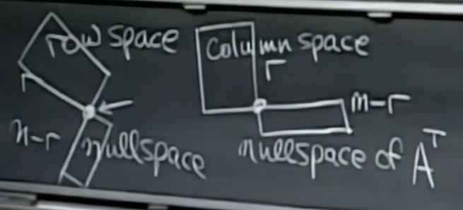
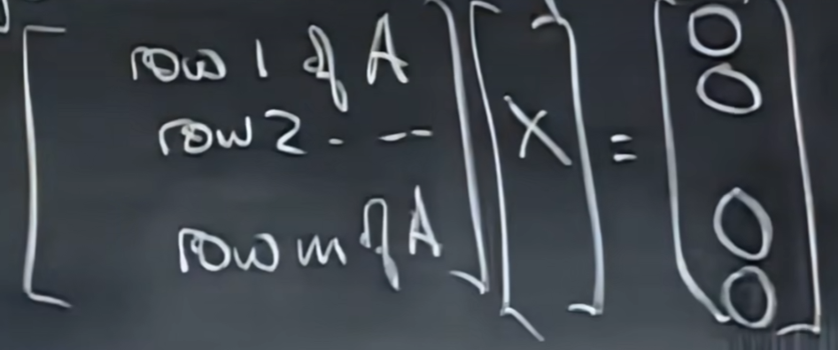
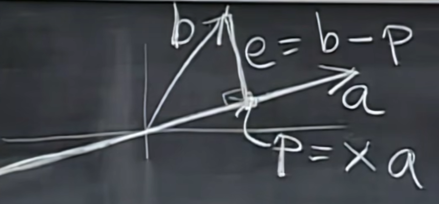

正交向量/空间、对向量/空间投影、正交矩阵、正交化、行列式、特征值/特征向量、(特征值)对角化、马尔可夫矩阵/傅里叶级数
一. 正交向量与子空间

先来欣赏下这幅图，这幅图的意思就是对于矩阵\(A\)，其行空间\(C(A^\mathrm{T})\)与零空间\(N(A)\)正交，其列空间\(C(A)\)与左零空间\(N(A^\mathrm{T})\)正交。
什么是向量正交？俩向量正交就是他们俩间夹角呈90度。如果判别俩向量正交？若\(x^\mathrm{T} \cdot y = 0\)，则x与y正交。
上面那个公式如何推导的呢？
首先思考如何描述一个向量的长度，假设有一个向量（1,2,3），那么它的长度显然是\(\sqrt{1^2 + 2^2 + 3^2}\)对吧，用向量表示就是\(\sqrt{x^Tx}\)。
好的，知道了如何表示向量长度又如何，假设我给你向量\(x, y\)，你咋判断呢？
首先思考下\(x + y\)是什么？很容易想到，可以把x和y看作三角形的两边，那么\(x + y\)就是斜边。那么三条边都知道了，如果xy正交的话，那么就会有\(x^\mathrm{T}x + y^\mathrm{T}y = (x+y)^\mathrm{T}(x+y)\),化简可得：\(x^\mathrm{T}x + y^\mathrm{T}y = x^\mathrm{T}x + x^\mathrm{T}y + y^\mathrm{T}x + y^\mathrm{T}y\)，继续化简：\(x^\mathrm{T}y + y^\mathrm{T}x = 0\)，继续化简：\(2x^\mathrm{T}y=0\)，所以得到\(x^\mathrm{T}y = 0\)。
向量正交很容易理解，但如果我说，俩子空间正交，又是什么意思呢？
假设我有子空间\(S\)和\(T\)，那么S和T正交，当且仅当S中的每个向量和T中的每个向量正交。
ok，举个反直觉的实际例子：墙壁和地面正交吗？答案是否，因为墙壁和地面的交集边缝，边缝自己和自己不正交，所以不满足定义。
所以需要注意的是，若两个空间正交，那么它们一定不会交于某个非零向量。
所以在实际例子中，最常见的正交就是两条不重合的过原点且为90度的直线，它们是正交的。
回到四个基本子空间，现在我要给出结论：行空间正交与零空间。
为什么，看下面这幅图（Ax=0）：

可以发现，row1和x做点乘为0，row2和x做点乘为0，... ...，所以x与所有行都正交。行空间可以表示为这些行的线性组合，即\(k_1row_1 + k_2row_2 + ... + k_mrow_m\)，显然，做下点乘：\(x \cdot (k_1row_1 + k_2row_2 + ... + k_mrow_m) = 0\)，所以行空间与零空间正交。
同样的，我们可以得出结论：列空间与左零空间正交。道理一样我就不证了。
还有有趣的一点，实际上，行空间 + 零空间 = \(\mathbb{R}^n\)，列空间 + 左零空间 = \(\mathbb{R}^m\)。
从上一节的公式就可以一窥究竟：\(dim(S) + dim(U) = dim(S + U) + dim(S \cap U)\)。
把行空间和零空间代入，秩分别为r和n - r，所以(行空间 + 零空间)的维素就是n，而且行空间和零空间的分量个数都为n，所以(行空间 + 零空间)就等于\(\mathbb{R}^n\)。
列空间 + 左零空间 = \(\mathbb{R}^m\)同理，我就不证了。
为了定义这种现象，我们把行空间和零空间称为正交补的。即：行空间与零空间正交补，列空间与左零空间正交补。
二. 子空间投影
首先先从最简单的一个例子开始：

我们将向量b投影到向量a上，投影向量为p，误差向量为e。可以发现，p是a的某倍。所以问题的关键，就是在找到这个系数x。
ok，由几何性质我们知道，向量e与a正交，所以：\((b - xa)^\mathrm{T}a = 0\)，整理可得：\(b^\mathrm{T}a = xa^\mathrm{T}a\)，继续：\(x = \frac{b^\mathrm{T}a}{a^\mathrm{T}a}\)。当然也可以写成：\(x = \frac{a^\mathrm{T}b}{a^\mathrm{T}a}\)。
所以\(p = a \cdot \frac{a^\mathrm{T}b}{a^\mathrm{T}a}\)。
ok上个这个小例子推出来的公式可以留个印象。现在我们进一步抽象化，把投影这个动作看作一种运算，也就是最好弄出一个投影矩阵P，然后b左乘一下这个投影矩阵Pb，就可以得到p，这是我们想要的。
其实通过上面的公式就可看出，\(P = \frac{aa^\mathrm{T}}{a^\mathrm{T}a}\)。非常优美的式子。
我们来思考一下这个投影矩阵P的列空间。它的列空间是啥呢？
考虑\(Px\)，x可取任意向量，那么就相当于对P的列向量做任意线性组合，也就是生成了\(C(P)\)。通过几何意义我们可以知道，\(C(P)\)就是通过a的一条线，而且\(r(P) = 1\)。
这个投影矩阵\(P\)还有一些好玩的性质，比如通过其公式，显然看出它是一个对称矩阵，所以\(P^\mathrm{T} = P\)。
以及\(P^2 = P\)，为什么呢？前面我们说了\(C(P)\)就是通过a的一条线，而且\(r(P) = 1\)，说明\(P\)的每一个列向量都在a那条直线上，所以\(P \cdot P\)相当于对\(P\)的每一列做投影，那么通过几何性质，若一个向量本就在线上，投影之后位置仍不变，所以\(P \cdot P = P\)。
总结一下：
- \(x = \frac{a^\mathrm{T}b}{a^\mathrm{T}a}\)，\(p = ax = a \cdot \frac{a^\mathrm{T}b}{a^\mathrm{T}a}\)
- \(P = \frac{aa^\mathrm{T}}{a^\mathrm{T}a}\)， \(p = Pb\)
- \(C(p) = \text{过a的线}\)， \(r(P) = 1\)
- \(P^\mathrm{T} = P\)，\(P^2 = P\)
现在让我们进入更高维度的投影。
先剧透一下，学这个可以解决什么问题呢？我们知道，Ax = b并不100%有解，有时候，我们在无解的情况下，就想找到最优近似解，也就是误差向量\(e\)最小。
怎么做呢？很自然的就联想到投影。因为此时b不在\(C(A)\)上，所以我们就要将\(b\)投影到\(C(A)\)上，得到投影向量p。那么此时求解\(A\hat{x} = p\)，得到的\(\hat{x}\)就是最优近似解。
很巧妙不是吗？这用到了向量对空间的投影。
继续思考，我们要做的事情，就是找到一个x，使得b与(Ax)的误差向量e垂直C(A)。此时的x就是\(\hat{x}\)。
把上面的语言转化为数学语言： \[ \begin{align*} &p = A\hat{x} \\ &e = b - p = b - (A\hat{x}) \\ &e^\mathrm{T}A = 0 \end{align*} \] （\(e\)垂直与\(C(A)\)与\(e^\mathrm{T}A=0\)等价，因为\(C(A)\)可由列向量线组出来，所以只要\(e\)垂直于\(A\)的每一个列向量，那么\(e\)就垂直于\(C(A)\)）
（上面的方程我们还可以发现一点有趣的事实，显然\(e\)位于\(A\)的左零空间内，而通过几何意义我们知道，\(e\)与\(C(A)\)正交。很巧的事情，\(N(A^\mathrm{T})\)与\(C(A)\)正交。一切都对上了，是不是？）
OK，整理上面的方程，可以得到：\(A^\mathrm{T}A\hat{x} = A^\mathrm{T}b\)。
如果\(A^\mathrm{T}A\)是可逆的，那么直接乘它的可逆矩阵，即可求出\(\hat{x}\)。
对应的投影向量为：\(p = A \cdot (A^\mathrm{T}A)^{-1} \cdot A^\mathrm{T}b\)
对应的投影矩阵为：\(P = A \cdot (A^\mathrm{T}A)^{-1} \cdot A^\mathrm{T}\)
生成投影向量的线组系数：\(\hat{x} = (A^\mathrm{T}A)^{-1} \cdot A^\mathrm{T}b\)
类比上面的向量对向量投影的公式，是不是形式一样？只需把\(a\)换为\(A\)，分号改为逆就好啦？美妙的公式。
同理，此时的投影矩阵\(P\)同样满足：\(P^\mathrm{T} = P\)，\(P^2 = P\)
ok，让我们讨论剩下的一点细节，前面我们是把\(b\)投影到\(C(A)\)中。那如果我想把\(b\)投到与\(C(A)\)正交的空间，也就是\(N(A^\mathrm{T})\)呢？显然，通过几何意义可以看出，答案就是\(e\)，即\(b - p\)。
所以投影到\(N(A^\mathrm{T})\)就是：\(b - p = b - Pb = (I - P)b\)。所以对应的投影矩阵就是\(I - P\)。同样的，\(P\)满足的性质，\(I - P\)也都满足。
以及，前面提到，必须\(A^\mathrm{T}A\)是可逆矩阵，才能解出\(\hat{x}\)。但是，如何判断它可逆呢？有一个判断方法：若\(A\)的各列线性无关，那么\(A^\mathrm{T}A\)就是可逆矩阵。下面来证明一下：
假设\(A\)的各列线性无关。
考虑方程\(A^\mathrm{T}Ax = 0\)
两边同乘\(x^\mathrm{T}\)，得：\(x^\mathrm{T}A^\mathrm{T}Ax = 0\)
整理：\((Ax)^\mathrm{T}(Ax)=0\)
所以说嘛向量\((Ax)\)长度为0，也就是它为零向量，所以：\(Ax=0\)
因为\(A\)的各列线性无关，所以\(dim(N(A)) = 0\)，所以\(x\)只能去零向量。
所以对于方程\(A^\mathrm{T}Ax = 0\)，\(x\)只能取零向量。
而只有当\(A^\mathrm{T}A\)可逆的时候，上面的方程才只有零解。证毕。
最后，让我们举一个用投影来解决的实际例子：最小二乘。
平面上有n个点，要找到一条直线，尽可能的拟合这些点，怎么办？
假设有这么一条理想直线：y = kx + b，可以拟合所有点，那么就会有方程： \[ \begin{align*} kx_1 + b &= y_1 \\ kx_2 + b &= y_2 \\ ... \\ kx_n + b &= y_n \end{align*} \] 我们要求k和b，所以把k和b看为未知数。
那么即可建模为\(Ax=b\)，\(A = \begin{bmatrix} x_1 & 1 \\ x_2 & 1 \\ ... & ... \\ x_n & 1 \end{bmatrix}\)，\(x = \begin{bmatrix} k \\ b \end{bmatrix}\)，\(b = \begin{bmatrix} y_1 \\ y_2 \\ ... \\ y_n \end{bmatrix}\)
这个方程大概率是无解的，因为不存在这么一条完美直线，所以就把\(b\)投影到\(C(A)\)即可。
巧妙的建模，相信你再一次感受到线代的魅力了！
- 总结一下：
- 一维（向量b投影到向量a）：
- \(P = \frac{aa^\mathrm{T}}{a^\mathrm{T}a}\)，\(p = Pb\)
- 高维（向量b投影到空间C(A)）：
- \(P = A \cdot (A^\mathrm{T}A)^{-1} \cdot A^\mathrm{T}\)
- \(p = A \cdot (A^\mathrm{T}A)^{-1} \cdot A^\mathrm{T}b\)
- 判断对称矩阵\(A^\mathrm{T}A\)是否可逆的方法：看\(A\)的各列是否线性无关
- 一维（向量b投影到向量a）：
三. 正交矩阵, Schmidt正交化
在这一节里，我们用\(Q\)来代表列向量全是正交且标准（长度为1）的矩阵。
显然，这个\(Q\)满足下列定义：\(q_{i}^{T}q_{j}=\begin{cases}0&,i\neq j\\1&,i=j\end{cases}\)
讨论一下，\(Q^\mathrm{T}Q\)是什么？\(Q = \begin{bmatrix} q_1, q_2, ..., q_n \end{bmatrix}\)，\(Q^\mathrm{T} = \begin{bmatrix} q_1^\mathrm{T} \\ q_2^\mathrm{T} \\ ... \\ q_n^\mathrm{T} \end{bmatrix}\)。
显然，\(Q^\mathrm{T}Q = I\)。
下面，我们对“正交矩阵”这个名词下一个定义：首先得是方阵，其次列向量都是互相正交且单位的。这样的矩阵就叫正交矩阵。
（注意，本节的\(Q\)不一定是方阵，若无特殊说明，是不是方阵都有可能）
ok，让我们现在讨论一下正交矩阵的性质。
正交矩阵也满足\(Q^\mathrm{T}Q = I\)，而且因为为方阵，所以\(Q\)有逆矩阵。所以可以推出\(Q^\mathrm{T} = Q^{-1}\)。
OK，让我们思考一下正交矩阵的投影矩阵：\(P = Q(Q^\mathrm{T}Q)^{-1}Q^\mathrm{T} = QQ^\mathrm{T}\)。因为是正交矩阵，所以\(Q^\mathrm{T} = Q^{-1}\)，所以\(P = I\)，即正交矩阵的投影矩阵就是单位阵。如果\(Q\)不是方阵的话，那么其投影矩阵就是\(QQ^\mathrm{T}\)。当然了，它们的投影矩阵都是满足那俩性质的：
- 是对称矩阵
- \(P^2 = P\)
正交且标准的性质是很好的，所以我们如何把一个虽然列向量互相线性无关（但是不正交）的矩阵\(A\)，转化为列向量互相正交且标准的矩阵\(Q\)呢？下面来介绍格拉姆-施密特正交法：
思考现在有向量\(a, b, c\)，它们互相线性无关，但是不正交，如果把它们转换为一组正交的呢？
首先把\(a\)单位化然后锁死，然后对于\(b\)，\(b\)减去\(b\)在\(a\)上的投影（也就是误差向量\(e\)）就是我们想要的，所以\(b' = b - p = b - Pb = b - \frac{aa^\mathrm{T}}{a^\mathrm{T}a}\cdot b\)，然后单位化，锁死。
然后对于\(c\)，先把在\(a\)上的投影减掉，再把在更新后的\(b\)上的投影减掉，就得到了正交于\(a, b\)的向量：\(c' = c - p_a - p_b = c - \frac{aa^\mathrm{T}}{a^\mathrm{T}a} \cdot c - \frac{bb^\mathrm{T}}{b^\mathrm{T}b} \cdot c\)，然后单位化，锁死。
其余的向量以此类推。
很好，现在你学会了如何将一组虽然线性无关但是不是正交的向量转化为正交的向量组，恭喜。
但是我要提个问题，转化前的矩阵\(A\)和转化后的矩阵\(Q\)，它们的列空间一样吗？
答案是肯定的，因为考虑我们转化的过程，例如\(c = c - p_a - p_b\)，\(p_a\)是\(a\)的缩放，\(p_b\)是\(b\)的缩放，所以其实我们在正交化的过程中，仍然是用原向量组做线性组合（即列变换），所以转换后的矩阵，其列空间一样\(C(Q)\)=\(C(A)\)，零空间一样\(N(Q) = N(A)\)。
截止，你已经知道了正交的概念，也认识到了正交矩阵以及一些性质。甚至你还学会了如何将一组线性无关向量组转化为标准正交的向量组。
但是，知道这些，有什么用呢？
目前我知道的是，可以讲一个各列线性无关的矩阵\(A\)进行\(QR\)分解：\(A = QR\)。\(Q\)表示各列互相标准正交的向量，\(R\)是一个上三角矩阵。
为啥\(R\)是一个上三角矩阵呢？我来证明一下：
在正交化的过程中，对于\(a_i\)，它依赖了\(q_1, q_2, \cdots, q_{i-1}, a_i\)，线组出了\(q_i\)。所以，如果我有\(q_1, q_2, \cdots, q_i\)，那我就可线组出\(a_i\)。所以对于\(A = QR\)，\(R\)就是线组的系数。而且可发现想线组出\(a_i\)只需用到\(1 \sim i\)的\(q\)，所以\(R\)自然就是一个上三角的了。
四. 行列式及其性质
行列式是方阵独属的浪漫，通常记为\(det(A)\)或者\(|A|\)。
行列式这里性质特别多，可能需要一些记忆：
单位阵的行列式为1
交换两行，行列式符号会取反
\(\begin{vmatrix} ta & tb \\ c & d \end{vmatrix} = t\begin{vmatrix} a & b \\ c & d \end{vmatrix}\)
\(\begin{vmatrix} a+a' & b+b' \\ c & d \end{vmatrix} = \begin{vmatrix} a & b \\ c & d \end{vmatrix} + \begin{vmatrix} a' & b' \\ c & d \end{vmatrix}\)
若有两行相等，则行列式为0
行j减去行i的k倍，行列式不变
如果有一行为0，那么行列式为0
对于上三角方阵，其行列式为对角线元素乘积
\(det(A)=0 \iff\) 矩阵\(A\)是奇异矩阵（奇异矩阵就是不满秩的方阵）
\(det(AB) = det(A) \cdot det(B)\)
\(det(A^\mathrm{T}) = det(A)\)
- 有了这条性质，那么上面描述行的性质，同样可以描述列，例如：
- 交换两列，行列式符号取反
- 除了行有线性关系（性质3、4），列也具有
- 若有两列相等，则行列式为0
- 如果有一列为0，那么行列式为0
所以如何求一个方阵的行列式？通常就是将其消元成上三角矩阵（注意过程中行交换会导致行列式符号取反），然后对角线相乘即可。
行列式公式1：\(det(A) = \sum (-1)^{r(k_1, k_2, k_3, ..., k_n)}a_{1k_1}a_{2k_2}a_{3k_3}...a_{nk_n}\)
\(r(k_1, k_2, ..., k_n)\)是排列的逆序数。
代数余子式：位置(i, j)的代数余子式\(A_{ij} := (-1)^{i+j}det(\text{去掉第i行和第j列得到的矩阵})\)
行列式公式2：\(det(A) = a_{11}C_{11} + a_{12}C_{12} + \cdots + a_{1n}C_{1n}\)
五. 克拉默法则, 体积
设\(A_{ij}\)是位置(i, j)的代数余子式，则矩阵\(A\)的伴随矩阵定义如下： \[ A^* = \begin{bmatrix} A_{11} & A_{21} & \cdots & A_{n1} \\ A_{12} & A_{22} & \cdots & A_{n2} \\ \cdots \\ A_{1n} & A_{2n} & \cdots & A_{nn} \end{bmatrix} \] 它满足一个公式，通过代数法求逆：\(A^{-1} = \frac{A^*}{det(A)}\)
那么对于非奇异矩阵\(A\)，它的方程：\(Ax=b\)就有一种新的解法。
\(x = A^{-1}b = \frac{A^*b}{det(A)}\)
所以可得到以下式子： \[ \begin{align*} x_1 &= \frac{det(\text{把A的第一列换为b})}{det(A)} \\ x_2 &= \frac{det(\text{把A的第二列换为b})}{det(A)} \\ \cdots \\ x_n &= \frac{det(\text{把A的第n列换为b})}{det(A)} \end{align*} \] 上面就是克拉默法则，用代数的方程解方程。但是我觉得，中看不中用，不如直接用矩阵的方程去解方程组。
给出一个有意思的定理：行列式的绝对值其实是在计算“箱子”的体积。
我举个例子，比如有矩阵\(A = \begin{bmatrix} a_{11} & a_{12} & a_{13} \\ a_{21} & a_{22} & a_{23} \\ a_{31} & a_{32} & a_{33} \end{bmatrix}\)
那么\(|det(A)|\)等于以\((a_{11}, a_{12}, a_{13})\)，\((a_{21}, a_{22}, a_{23})\)、\((a_{31}, a_{32}, a_{33})\)为三边所形成的箱子的体积。
同理，对于\(n \times n\)的矩阵同样成立。
六. 特征值, 特征向量
特征值是方阵独属的浪漫。
首先来讲特征向量，矩阵\(A\)的特征向量就是那些进过\(A\)线性变换后方向不改变的向量。用数学语言表达就是：\(Ax = \lambda x\)。满足上述方程的\(x\)就是特征向量，\(\lambda\)就是特征值。
对于特征值0，它对应的特征向量应满足\(Ax=0\)，所以特征值0所对应的特征向量其实就是\(N(A)\)。
举点例子吧，考虑投影矩阵\(P\)。对于那些本身就已经在投影面上的向量\(x\)，满足\(Px = x\)，所以\(P\)特征值为1的特征向量就是投影面上的向量。对于那些垂直于投影面的向量\(x\)，满足\(Px = 0\)，所以\(P\)特征值为0的特征向量就是垂直于投影面的那些向量。
ok，我提前透露几个特征值的性质：
- n阶方阵有n个特征值
- n个特征值的和加起来等于方阵对角线之和
- n个特征值的乘积等于方阵的特征值
- 上三角方阵的特征值就是对角线上的元素
- \(A\)的特征值等于\(A^\mathrm{T}\)的特征值
- \(A^{-1}\)的特征值等于\(A\)的特征值取倒数
好，那给你一个矩阵\(A\)，如何求出其特征值和对应的特征向量呢？
很简单，首先列出定义：\(Ax = \lambda x\)，移项：\((A - \lambda I)x = 0\)。要使这个方程有非零解，\((A - \lambda I)\)要是奇异矩阵，也就是不满秩，也就是\(|A - \lambda I| = 0\)。
解上面那个行列式，即可求出所有的特征值\(\lambda\)（n个特征值可能有重复）。
然后反代回去，即可求出特征值对应的特征向量。
七. 对角化, A的幂
上一节我们学会了如何求一个矩阵\(A\)的特征值和对应的特征向量。这一节我们来利用特征向量来分解矩阵。
假设我们有一个矩阵\(A\)，它有n个线性无关的特征向量。那么我把这些向量排成一排得到矩阵\(S\)，叫做特征向量矩阵。然后推导下面式子：
\(AS = A \cdot \begin{bmatrix} \beta_1 & \beta_2 \cdots \beta_n \end{bmatrix} = \begin{bmatrix} \lambda_1\beta_1 & \lambda_2\beta_2 & \cdots & \lambda_n\beta_n \end{bmatrix} = \begin{bmatrix} \beta_1 & \beta_2 & \cdots & \beta_n \end{bmatrix}\begin{bmatrix} \lambda_1 & & & & \\ & \lambda_2 & & & & \\ & & \lambda_3 & & \\ & & & & \cdots \end{bmatrix}\)
即：\(AS =S\Lambda\)，\(\Lambda\)为用特征值生成的对角阵，也叫特征值矩阵
进一步化简，得到： \[ \Lambda = S^{-1}AS \\ A = S\Lambda S^{-1} \] 这种对角化分解有什么用呢？答案：在处理矩阵的幂的时候非常有用
首先来看一下\(A^2\)：\(A^2 = S\Lambda S^{-1} \cdot S\Lambda S^{-1} = S\Lambda^2 S^{-1}\)
可以发现，\(A^2\)的特征值就是\(A\)特征值的平方，\(A^2\)的特征向量与\(A\)一样。
同理，\(A^k\)的特征值就是\(A\)特征值的\(k\)次方，\(A^k\)的特征向量与\(A\)一样。
来个好玩的问题，当\(A\)的特征值满足什么条件时，\(A^k = O, k \to \infty\)？
通过上面的公式，可得\(A^k = S\Lambda^kS^{-1}\)，显然\(S\)是固定的，所以关键就是看\(\Lambda\)。很容易想到，如果\(A\)的所有特征值满足\(|\lambda_i| < 1\)的话，那么矩阵\(A\)会收敛到零矩阵。
（上面对角化分解非常有用，但需要注意分解的前提是\(A\)有n个线性无关的特征向量。如何判断呢？这里给出一个定理：如果\(A\)有n个互不相同的特征值，那么\(A\)就有n个线性无关的特征向量；否则则不一定。）
先介绍一阶差分方程，即：\(u_{k+1} = Au_k\)。（我们考虑理想的情况，即认为\(A\)有n个互不相同的特征值。）
那么可推出：\(u_k = A^ku_0\)
因为\(A\)的各特征向量线性无关，所以\(\mathbb{R}^n\)可用特征向量线组出来，\(u_0\)同样可以用特征向量线组出来，设线组的系数为\(c\)列向量，那么\(u_0\)可表示为\(Sc\)。
所以\(u_k = S\Lambda^kS^{-1} \cdot Sc = S\Lambda^kc\)。
下面我们来一道经典的例题，现有斐波拉契数列：0, 1, 1, 2, 3, 5, 8, ... ...。试用矩阵求斐波拉契数列，并分析其增长速度。
首先可写出递推式：\(F_{k+2} = F_{k+1} + F_k\)。可以发现这是一个二阶的差分方程，我们想把其转为前面的知识转为一阶的，所以我使用一个trick，就是再加入一个方程，然后引入新变量去表达方程组，使其变为一阶差分方程，具体如下： \[ \begin{cases} F_{k+2} = F_{k+1} + F_k \\ F_{k+1} = F_{k+1} \end{cases} \] 设\(u_k = \begin{bmatrix}F_{k+1} \\ F_k\end{bmatrix}\)，所以上述方程组可表达为一个一阶差分方程：\(u_{k+1} = \begin{bmatrix}1 & 1 \\ 1 & 0\end{bmatrix}u_k\)。
好，先来看看矩阵\(A = \begin{bmatrix}1 & 1 \\ 1 & 0\end{bmatrix}\)是否可对角化，有\(\begin{cases} \lambda_1 + \lambda_2 = 1 \\ \lambda_1 \cdot \lambda_2 = -1 \end{cases}\)，解得：\(\begin{cases} \lambda_1 = \frac12(1 + \sqrt{5}) \approx 1.618 \\ \lambda_2 = \frac12(1 - \sqrt{5}) \approx -0.618 \end{cases}\)
有俩不同特征值，由前面的判定定理可知，\(A\)可对角化，那么可求出其特征向量矩阵\(S = \begin{bmatrix} \lambda_1 & \lambda_2 \\ 1 & 1 \end{bmatrix}\)。
由前面的公式可知：\(u_k = S\Lambda^kc\)。在这里，\(c\)是用特征向量表示出\(\begin{bmatrix} F_1 \\ F_0 \end{bmatrix}\)的系数列向量。让我求一下：\(u_0 = \begin{bmatrix} 1 \\ 0 \end{bmatrix} = c_1\begin{bmatrix} \lambda_1 \\ 1 \end{bmatrix} + c_2\begin{bmatrix} \lambda_2 \\ 1 \end{bmatrix}\)，这里就不解了。
所以现在\(S, \Lambda, c\)都有了，那么\(u_k\)就可求出来了，即\(F_k\)就可求出来了。
但是这个一阶差分方程的增长速度我们还没分析，其实观察\(u_k = S\Lambda^kc\)就可知道，增长速度由特征值决定，若\(|\lambda_i| < 1\)，那么\(u_k\)直接会收俩到0。
对于那些\(|\lambda_i| > 1\)的，越大的\(|\lambda_i|\)，只要对应的\(c_i \ne 0\)，那么对应的特征向量增长速度就越快。
这一节的内容稍微有点点难消化，不过这已经有点点科研证明的味道了。多看多理解。
八. 微分方程, exp(At)
在开始这节课之前，我觉得有必要补充介绍一点微分方程的概念。
定义：含自变量（例如\(x\)）、函数（例如\(y\)）以及函数各阶导数（例如\(\dot{y}, \ddot{y}\)）的等式称为微分方程。
抱歉，真听不懂，是我高数太垃圾了，回头补完微分方程再来听这节课。
九. 马尔可夫矩阵, 傅里叶级数
什么是马尔可夫矩阵，若\(A\)满足以下两条定义，则它是马尔可夫矩阵：
- 所有元素大于0（概率值不能为负数）
- 每一列元素和为1
- 方阵
对于马尔可夫矩阵，很容易发现，其幂即\(A^k\)同样也是马尔可夫矩阵。
这里我直接给出两个结论：
- 马尔可夫矩阵有一个特征值为1
- 马尔可夫矩阵其余特征值绝对值小于等于1
根据上面的结果，我们可以知道，如果一个向量一直右边马尔可夫矩阵，那么最终会达到一个稳态。显然这个稳态是我们关心的，我们需要找到它。
假设矩阵\(A\)有n个线性无关的特征向量\(\beta\)-s，那么对于式子：\(u_k = A^ku_0\)
\(u_0\)可以被表示为：\(u_0 = c_1\beta_1 + c_2\beta_2 + \cdots + c_n\beta_n = Sc\)
\(A^k\)根据前面所学可对角化为：\(A_k = S\Lambda^kS^{-1}\)
\(\therefore u_k = S\Lambda^kS^{-1}Sc = S\Lambda^kc = c_1\lambda_1\beta_1 + c_2\lambda_2\beta_2 + \cdots + c_n\lambda_n\beta_n\)
所以那些绝对值<1的项最终会迭代没，绝对值为1的项加起来就是稳态。
傅里叶级数是一个可用来拟合任意周期函数的工具，例如我想拟合一个周期为\(2\pi\)的函数\(f(x)\)，可用傅立叶级数表达为下列形式：
\(f(x) = a_0\cdot 1 + a_1\cos x + b_1\sin x + a_2\cos 2x + b_2\sin 2x + \cdots + a_n\cos nx+ b_n\sin nx\)
所以关键就是确定下系数\(a_i, b_i\)，那我们用线性代数来看待这个问题。
可以把\(1, \cos x, \sin x, \cos 2x, \sin 2x, \cdots, \cos nx, \sin nx\)看作基\(\beta_i\)-s，\(f(x)\)看作\(b\)，那么\(a_i, b_i\)就是线性组合的系数。
让我写成这种形式：\(c_0\beta_0 + c_1\beta_1 + c_2\beta_2 + \cdots + c_n\beta_n = b\)
问题即为求出\(c_i\)。
假设\(\beta_i\)-s们正交就好了，我们来检查一下是否正交。
因为这里的“向量”是函数，所以离散型的点积在这里并不是适用，对于函数\(f(x), g(x)\)，其实点积是\(\int_a^b f(x)g(x) \mathrm{d}x\)，因为本题函数周期为\(2\pi\)，所以俩函数点积为：\(\int_0^{2\pi}f(x)g(x) \mathrm{d}x\)，检查一下发现这些“基”们确实是正交的。
那么求系数\(c_i\)就好办了，比如我要求\(c_1\)，那么等式两边分别“点积”\(\beta_1\)，得：
\(c_1 \int_0^{2\pi}(cosx)^2\mathrm{d}x = \int_0^{2\pi}f(x)\cos x\mathrm{d}x\)
因为正交性，非\(\beta_1\)的项都为0了，所以解这个方程即可把\(c_1\)求出来，其余系数求法同理。
非常巧妙优美的做法。
十. 复习课二
主要因为这章的知识比较重要，所以适合来2道例题巩固一下。而且我想通过例题顺便补充下代数重数和几何重数的知识点。
例1. \(a = \begin{bmatrix} 2 \\ 1 \\ 2 \end{bmatrix}\)
- 求投影到\(a\)的投影矩阵\(P\)
套公式：\(P = \frac{aa^\mathrm{T}}{a^\mathrm{T}a} = \frac{1}{9} \begin{bmatrix} 4 & 2 & 4 \\ 2 & 1 & 2 \\ 4 & 2 & 4 \end{bmatrix}\)
- 求\(P\)的秩
因为\(P\)的列空间\(C(P)\)是投影面，而投影面又是三维空间里的一维直线，所以\(dim(C(A)) = r = 1\)。
- 求\(P\)的特征值
因为\(r(P) = 1\)，所以它是奇异，所以\(det(P) = 0\)，所以它必有一个特征值为0。
我们知道特征值为0对应的特征向量就是\(N(P)\)里的那些基们，而我们知道\(dim(N(P)) = n - r = 2\)，所以基里有俩向量，所以特征值0的几何重数为2，又因为几何重数 <= 代数重数，所以至少有两个特征值为0。
\(P\)的迹又是1，所以不可能三个特征值都为0，所以可确定特征值0的代数重数也为2。所以特征值分别为0、0、1
知识点补充：代数重数、几何重数
代数重数就是某特征值重复的个数
几何重数就是某特征值对应的互相线性无关的特征向量的个数。这些线性无关的特征向量组合的空间叫做特征子空间
性质：几何重数 <= 代数重数
- \(P\)特征值为1对应的特征向量是啥
其实就是问你\(Px=x\)的\(x\)都有谁，根据几何意义，显然\(x\)就在投影面上啊，即那条线，所以特征向量写\(a\)就行了
例2. 已知一个4阶方阵\(A\)具有特征值\(\lambda_1, \lambda_2, \lambda_3, \lambda_4\)
- 特征值需要满足什么条件才能保证\(A\)为可逆矩阵
可逆矩阵说明\(r(A) = n\)，那么零空间的维数就为0。而如果有特征值为0，那么必然说明零空间有非零向量，即\(r(A) \ne n\)。所以必须满足所有特征值不为0，才能保证\(A\)为可逆矩阵
- 求\(A^{-1}\)的行列式
因为\(A^{-1}\)的特征值是\(A\)特征值取倒数，行列式又是特征值之积，所以\(det(A^{-1}) = \frac{1}{\lambda_1\lambda_2\lambda_3\lambda_4}\)